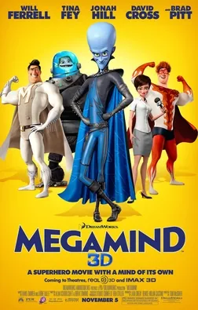

The genetics
Genetics enters through a superpower serum. Megamind extracts Metro Man's DNA from a flake of dandruff on his cape, and the injected serum gives an ordinary man the hero's powers; a second device later strips them out. The serum shows that powers can be transferred but character cannot: the hapless, resentful Hal becomes not a hero but a worse villain than Megamind. The nature versus nurture theme lies in the two aliens' contrasting upbringings, and the film favours nurture: Megamind is a villain because he was raised in a prison and rejected at school, and he becomes a hero by choice. As science the serum is pure fantasy. Injecting someone else's DNA cannot copy their abilities into an adult's body; real gene therapy delivers specific genes to specific tissues, with targeted and usually modest effects.
How genetics is portrayed
- Overall portrayal of genetics
- negative The protagonist's own genetic creation produces the film's real villain, and the lesson is that DNA can transfer powers but not character; the comic happy ending comes from reversing the genetics, not from it.
- Outcome of the genetic intervention
- negative The DNA serum turns a resentful cameraman into a destructive villain who nearly kills Megamind and terrorises the city; the defuser gun only undoes the harm the serum caused.
- Megamind
- ambivalent Aim: personal (neutral). Bored after seemingly killing Metro Man, Megamind extracts Metro Man's DNA from a flake of dandruff and makes a serum to create a new hero to fight, a private whim rather than an aim to help or harm others. The film shows him as a likeable villain whose serum backfires; he later uses his defuser gun to strip Tighten's DNA-derived powers and ends as the city's hero.
- Hal Stewart (Tighten)
- villain Aim: power, revenge (negative). Accidentally injected with the serum, Hal uses Metro Man's powers out of jealousy and resentment after Roxanne rejects him, beating Megamind, attacking the city and kidnapping Roxanne. He is stripped of the powers and jailed.
The story
Two alien infants are sent to Earth as their home planets are destroyed. Metro Man lands in a wealthy home and grows up to be Metro City's beloved superhero; Megamind lands in a prison, is raised by inmates, is bullied at school and becomes a supervillain. When Megamind seemingly kills Metro Man, he takes over the city but soon grows bored. Inspired by the reporter Roxanne Ritchi, whom he courts in disguise, he makes a serum from Metro Man's DNA to create a new hero to fight, but it is accidentally injected into Roxanne's cameraman, Hal. Coached by Megamind as the hero 'Titan', Hal turns into Tighten, a jealous, destructive villain. Metro Man, who faked his death to retire, refuses to help, so Megamind himself defeats Tighten, removes his DNA-derived powers and becomes the city's new hero.